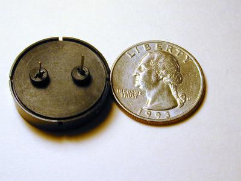
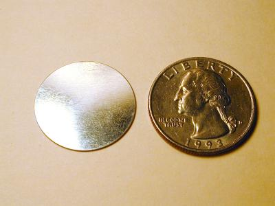
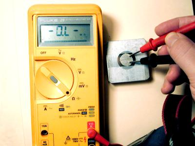
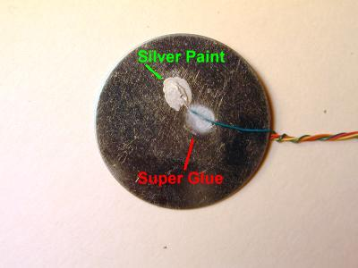
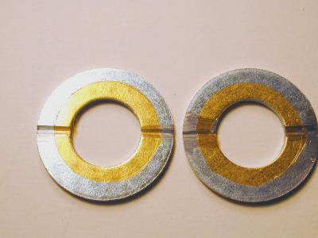
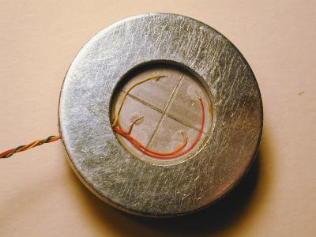
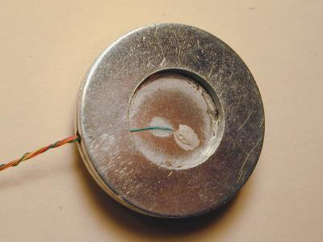
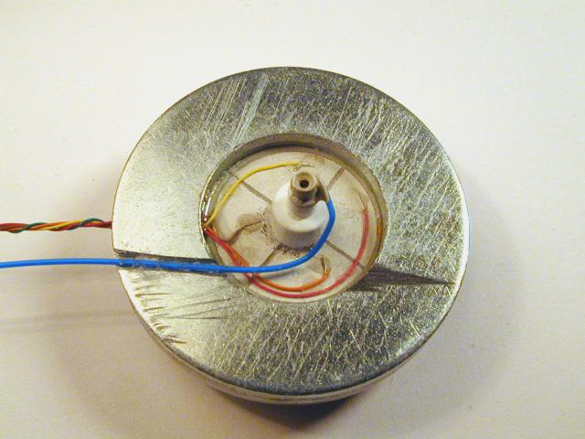

This is the source of the
Unimorph disk for STM scanner. It's a piezo buzzer from Panasonic part
# EFB-RD24C411. This Unimorph disk moves about 0.16 mm/Volt
in the Z axis, and its' natural resonance frequency is aproximatly 2.5
kHz. This Z motion is about an order of magnetude higer than for most piezo
tube scanners. This larger motion per volt allows this design to use much
lower voltage to control the scanner motion.
Front view of the buzzer
in case.

Back view
To remove the case cut into
the edge at a few places and bend back the edge of the front cover. The
disk is just healed (no glue) between the front and back half's of the
case.
After taking off the plastic
case here is the Unimorph disk. The small disk is the PZT ceramic. The
larger one is stainless steel.

Here is the other side.
The stainless steel disk
After taping the disk to
a piece of scrap metal divide the electrode into four quadrants by scratching
it with a knife. I used a strait edge to keep my cut strait.
The electrode divided into
four equal quadrants.
Now to clean the electrodes
before making electrical contact rub them with an pencil eraser.
Finished cleaning the disk

Next test that the electrodes
are completely separated. Use an Ohm meter to test that there are no shorts
between any of the electrodes. Now we are ready to make connections
I used conductive silver paint
to make connection to the piezo disk. This has the advantage over solder
in that you don't heat up the Piezo ceramic material. Heating the ceramic
could depole it. I also use super glue to strain relieve the wires.

Remember the stainless steel
disk is the Z electrode.
Now for making the mounting
for this disk. I used two 9/16" steel washers. They are large enough that
the opening at the center is larger that the piezo ceramic disk.
I used a file to make a groove
in the washers that the scanner wires will go through. In one washer I
made a second groove for connecting the STM tip.

I placed some insulating plastic
tape on the washers to insulate the stainless steel disk (Z electrode)
from the washers.

I placed the piezo disk scanner
in the mounting and glue it with super glue. Note the wires are aligned
to the groove.

To finish up the scanner I added
two pieces of "Plastruct" concentric plastic tubing to make the insulating
standoff. The tip holder is a pin from IC socket inserted in the center
tube. again I used silver paint to make electrical contact to the tip holder.
This Standoff tipholder is then super glued to the center of the Uimorph
Disk. The Scanner is now complete.


 //-->
//-->